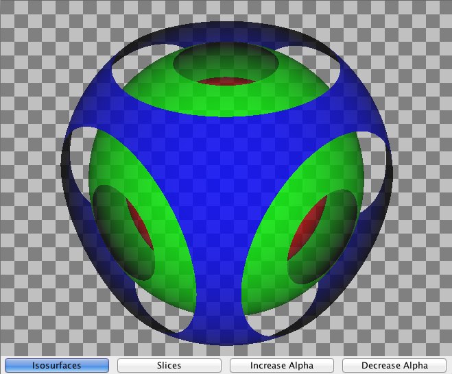

JVTK
Swing based VTK Panel (supports transparency and fullscreen mode).

Why this project?
The Java binding of VTK only provides heavyweight AWT based UI components. This has been done due to performance issues when accessing the native render data from Java. In some cases however, it is necessary to use real Swing components (lightweight). This allows for component layers (components can be rendered on top of the VTK component), transparency and many other features.
This project addresses the performance issue with custom color and sample model which allow for direct image conversion. This is relatively efficient for small component sizes (up to 800x600). In addition to that a fullscreen mode has been implemented to gain full render performance.